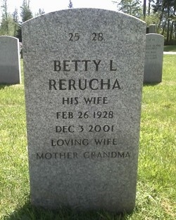
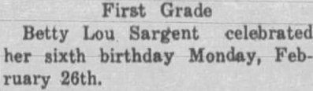
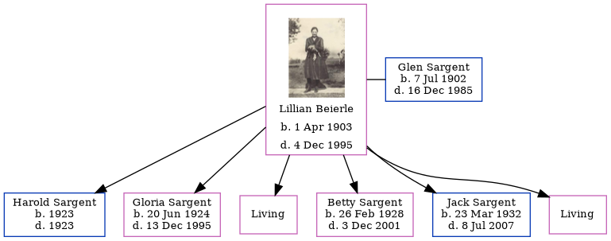

Betty Lou Kudelka (née Sargent) 1928 - 2001
[ Home ] | [ Calendar ] | [ Surnames Index ] | [ Census Index ] | [ Family History ]The 4th of 6 children of Glen Sargent (a barber) and Lillian Beierle, Betty Sargent, the fifth cousin once-removed on the mother's side of Nigel Horne, was born in Columbus, Platte, Nebraska, USA on Feb 26, 19281,2,3,4. She went to Radford University, Radford, Virginia, USA She was married twice - to Richard Rerucha (on Dec 29, 1946) Joe Kudelka (in Oct 2001 in Honolulu, Honolulu, Hawaii, USA, following the death of Richard Joseph on Apr 26, 1998).
During her life, she was living at 990 E Street, David City, Butler, Nebraska, USA on Apr 15, 19306; and at 979 D Street, David City, Nebraska on Apr 11, 19405.
She died on Dec 3, 2001 in Everett, Snohomish, Washington, USA1,2,3,4 and was buried on Tahoma National Cemetery, 18600 SE 240th Street, Kent, King, Washington on Dec 10, 20013,4.
Parents
- Glen Russel was born on Jul 7, 1902
- Lillian Winifred was born on Apr 1, 1903
Citations
- Social Security Death Index - Findmypast
- U.S. Veteran's Gravesites - Findmypast
- U.S., Find A Grave Index, 1600s-Current Ancestry.com Operations, Inc.
- Web: Washington, Find A Grave Index, 1821-2012 Ancestry.com Operations, Inc.
- US Census 1940 - Findmypast (was age 12 and the daughter of the head of the household)
- US Census 1930 - Findmypast (was age 2 and the daughter of the head of the household)
Media
Betty Lou Sargent - headstone

The People's Banner - 1 Mar 1934

The People's Banner - 1 Mar 1934
US Veterans Gravesites Transcription - USM-VETGRV-7285994
Social Security Death Index Transcription - USBMD-SSDI-506248633
1940 US Census Transcription - USC-1940-1476338497
1930 US Census Transcription - USC-1930-004951855-00631-013
1930 US Census Transcription - USC-1930-004951855-00631-009
Family Tree
Generated by ged2site. Last updated on Jun 11, 2024